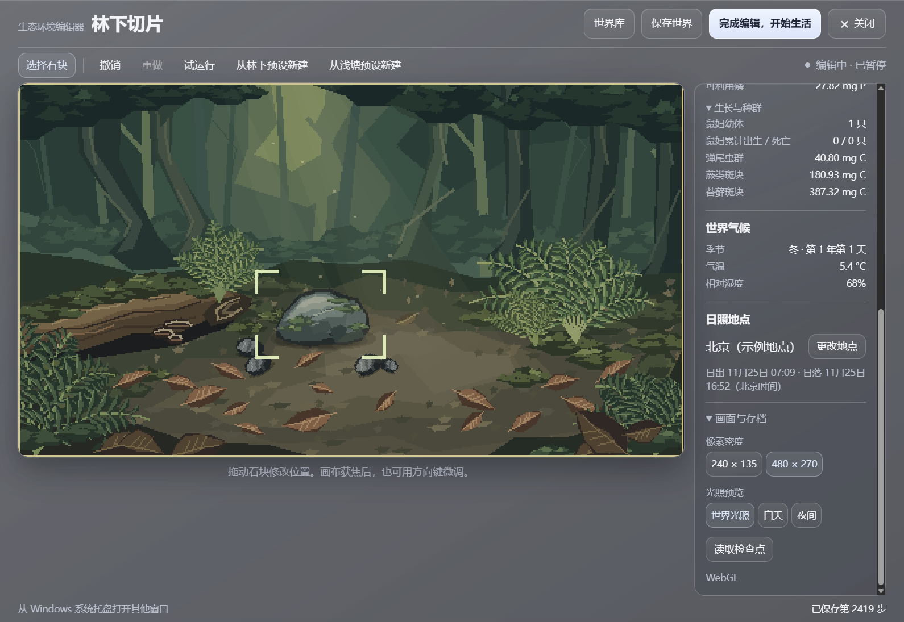

保存成功／失败状态提示 · 手动保存检查点
打开原始 PNG采集记录
Windows 原生应用 WebView2 客户区 PNG
原图 1590 × 1095 px · 客户区 1060 × 730 CSS px · DPR 1.5
世界刻度 2419 · 已选对象 石块遮蔽物 · 光照预览 世界光照 · 运行状态 编辑中 · 已暂停
右栏滚动偏移 470 CSS px，可见 601 / 总长 1070 CSS px。
编辑器→保存世界，或既有隔离故障方式
本轮在 Windows 应用中采到「保存成功」、「隔离存档路径受阻，页脚保存失败」、「解除隔离写入阻塞后保存成功」。可在采集记录核对进入方式、实际动作与方法。
编辑器→保存世界，或非输入控件聚焦下 Ctrl+S